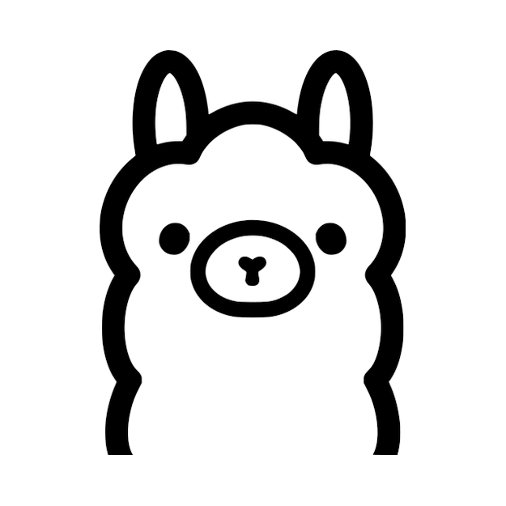
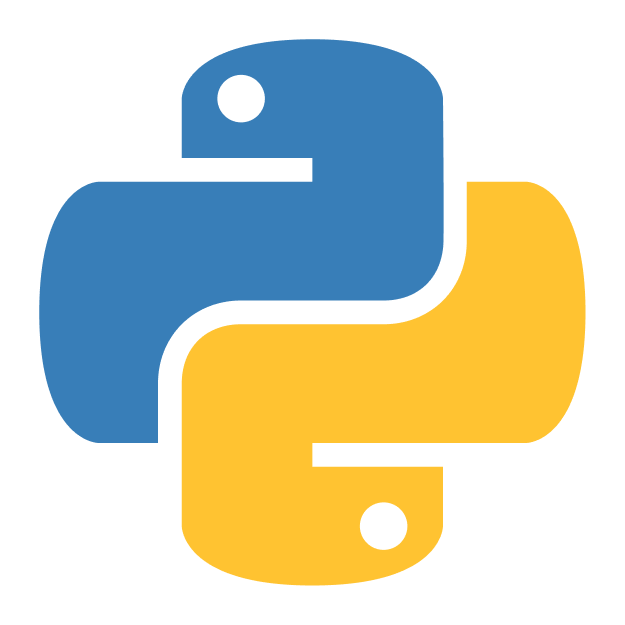
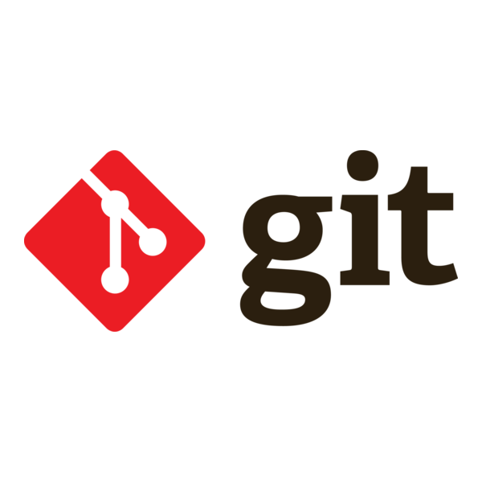
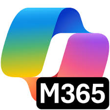

O mnie
Pasjonat technologii ze specjalizacją w sztucznej inteligencji,
łączący praktyczne doświadczenie w IT z solidnym zapleczem
technicznym. Studiuję informatykę (spec. Sztuczna Inteligencja) na
UAM w Poznaniu. Zajmowałem się w praktyce fine-tuningiem modeli
językowych oraz uruchamianiem dużych modeli LLM lokalnie i w chmurze.
Posiadam doświadczenie w programowaniu (Python, React, React
Native), analizie danych (Power BI, Pandas, Microsoft Fabric) oraz
pracy z chmurą (GCP, AWS, Firebase).
Jestem osobą analityczną, samodzielną i szybko przyswajającą nowe
technologie.
Wyróżnione projekty
Technologie wykorzystywane w projektach
- Hugging Face Transformers
- Unsloth
-

Ollama - PyTorch
-

Python - Django / DRF
- React / React Native
- Flutter
-

Git / GitHub - Pandas
- Microsoft Fabric / Power BI
- Microsoft SQL Server
-

Microsoft 365 / Office - Amazon Web Services
- Google Cloud
-
 Firebase
Firebase